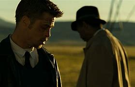
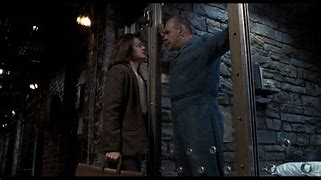
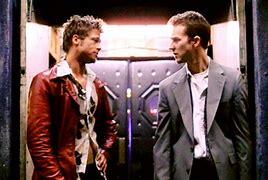
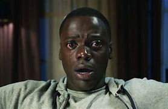

Sete Pecados CapitaisA história gira em torno de dois detetives com perfis opostos: o experiente William Somerset (Morgan Freeman), que está prestes a se aposentar, e o jovem e impulsivo David Mills (Brad Pitt), recém-transferido para o departamento. Juntos, eles investigam uma série de assassinatos brutais cometidos por um assassino em série que escolhe suas vítimas com base nos sete pecados capitais: gula, avareza, preguiça, luxúria, orgulho, inveja e ira. Cada cena do crime é cuidadosamente arquitetada para ilustrar o pecado da vítima, criando uma atmosfera sombria e perturbadora. O assassino, chamado de John Doe (Kevin Spacey), desafia os detetives ao deixar pistas macabras, levando-os a uma jornada psicológica intensa, com uma tensão crescente enquanto tentam capturá-lo antes que complete seus "sete crimes". O filme é conhecido pela sua atmosfera sombria, reviravoltas e pelo final surpreendente e chocante, que faz uma crítica à natureza humana e aos valores morais da sociedade. O filme é conhecido pela sua atmosfera sombria, reviravoltas e pelo final surpreendente e chocante, que faz uma crítica à natureza humana e aos valores morais da sociedade. |
Silêncio dos InocentesEstrelado por Jodie Foster como a agente novata do FBI Clarice Starling e Anthony Hopkins como o notório Dr. Hannibal Lecter, um psiquiatra brilhante e manipulador que está preso por assassinato e canibalismo. A trama segue Clarice, que é encarregada de investigar uma série de sequestros e assassinatos realizados por um assassino em série conhecido como "Buffalo Bill". Em busca de pistas para capturar o criminoso, ela busca a ajuda de Lecter, que possui conhecimentos profundos sobre a mente dos psicopatas. No entanto, em troca de informações, Lecter exige que Clarice revele detalhes pessoais e vulneráveis sobre sua vida, criando uma relação complexa e perturbadora entre os dois. A interação entre Clarice e Lecter é um dos pontos centrais do filme, levando Clarice a enfrentar seus próprios medos enquanto tenta entender a mente doentia de Lecter. O filme é conhecido por suas interpretações intensas, diálogos marcantes e cenas de tensão psicológica, além de trazer uma das figuras mais icônicas do cinema com Hannibal Lecter. Foi amplamente aclamado, ganhando os principais Oscars, incluindo Melhor Filme, Diretor, Ator, Atriz e Roteiro Adaptado. |
Clube da LutaNarrada por um protagonista anônimo, um homem insatisfeito com sua vida, que sofre de insônia e vive imerso em um emprego tedioso. Em busca de sentido, ele conhece Tyler Durden (Brad Pitt), um carismático e excêntrico vendedor de sabonetes com uma visão radical sobre a sociedade e o consumismo. Juntos, eles fundam o “Clube da Luta”, um grupo secreto onde homens se reúnem para lutar como forma de extravasar suas frustrações e desafiar a apatia de suas vidas. À medida que o clube cresce, Tyler leva o grupo a um movimento muito mais anárquico e subversivo, conhecido como "Projeto Destruição", que visa desafiar a estrutura da sociedade. No entanto, o protagonista começa a perceber que Tyler é uma influência muito mais sombria e destrutiva do que imaginava, o que o leva a questionar sua própria sanidade e identidade. Clube da Luta explora temas de alienação, masculinidade tóxica, consumismo e a busca pelo autoconhecimento. Com reviravoltas surpreendentes e um estilo visual intenso, o filme é um retrato provocativo da insatisfação social moderna e se tornou um clássico cult ao desafiar convenções e deixar o público com questões existenciais marcantes. |
Corra!Acompanha Chris Washington (Daniel Kaluuya), um jovem fotógrafo negro que está prestes a conhecer a família de sua namorada branca, Rose Armitage, durante um final de semana em sua casa de campo. Apesar da recepção calorosa de seus pais, Missy e Dean, Chris sente que algo estranho está acontecendo. A atmosfera cordial esconde um comportamento desconfortante e até sinistro, especialmente entre os empregados negros da casa, que parecem agir de forma robótica e distante. Com o tempo, Chris percebe que a família Armitage está envolvida em práticas perturbadoras e tem intenções muito mais sombrias do que aparenta. Conforme a tensão aumenta, ele tenta desesperadamente escapar, descobrindo um terrível segredo envolvendo hipnose, manipulação e um esquema sinistro de exploração racial. Corra! é uma crítica social afiada sobre o racismo na sociedade americana e explora questões como a objetificação e o fetichismo racial. Com seu roteiro inteligente e atmosfera de suspense constante, o filme foi amplamente aclamado pela crítica e se tornou um marco no gênero, além de ganhar o Oscar de Melhor Roteiro Original para Peele. |
|---|